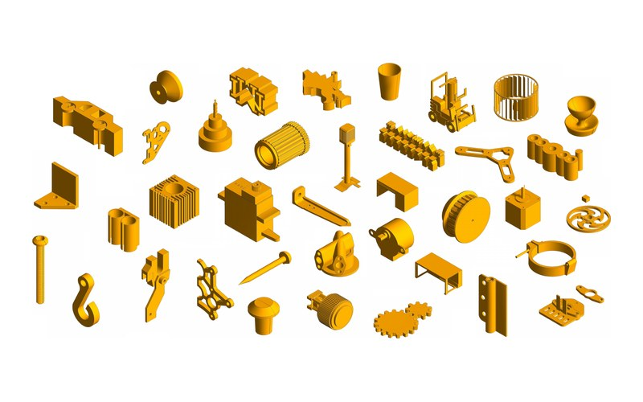

CADFit: Precise Mesh-to-CAD Program Generation with Hybrid Optimization
International Conference on Machine Learning (ICML), 2026 · with Siemens
Featured by MIT MechE
50+ GitHub stars
A hybrid optimization framework that recovers complex, editable CAD construction sequences (extrusions, revolutions, fillets, chamfers) from meshes by fitting and validating operations with IoU feedback. It sets the state of the art on DeepCAD, Fusion 360, and ABC, and also works end to end from photos.